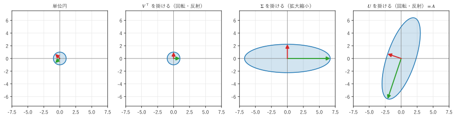
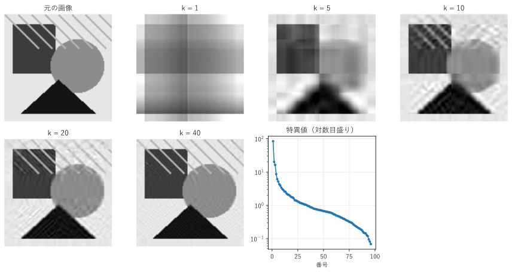

第 12 章 特異値分解
固有値分解は正方行列にしか使えず、対角化できない行列もある。特異値分解は、長方形の行列を含むすべての行列に使える分解であり、「線形代数の到達点」と呼ばれることもある。この章では、特異値分解の意味と性質を説明し、低ランク近似による画像の圧縮と、擬似逆行列による最小ノルム解に応用する。
特異値分解
任意の \(m \times n\) 行列 \(A\) は、
と分解できる。ここで、
\(U\) は \(m\) 次の直交行列で、その列 \(\bm{u}_1, \ldots, \bm{u}_m\) を左特異ベクトルという。
\(V\) は \(n\) 次の直交行列で、その列 \(\bm{v}_1, \ldots, \bm{v}_n\) を右特異ベクトルという。
\(\Sigma\) は \(m \times n\) の「対角」行列で、対角成分 \(\sigma_1 \ge \sigma_2 \ge \cdots \ge 0\) を特異値という。対角成分以外はすべて 0 である。
これを特異値分解（singular value decomposition、SVD）という。0 でない特異値の個数は、\(A\) のランクに等しい。
\(A = U\Sigma V^\top\) の右から \(V\) を掛けると \(AV = U\Sigma\)、つまり列ごとに
である。固有ベクトルの式 \(A\bm{v} = \lambda \bm{v}\) と似ているが、入力の方向 \(\bm{v}_i\) と出力の方向 \(\bm{u}_i\) が異なってよい。特異値分解は「定義域の正規直交基底 \(\bm{v}_i\) を、値域の正規直交基底 \(\bm{u}_i\) の \(\sigma_i\) 倍に移す」という形で、行列を表している。
幾何学的な意味
\(A\bm{x} = U(\Sigma(V^\top \bm{x}))\) と見ると、どんな線形写像も、次の 3 つの変換の合成であることが分かる。
\(V^\top\)：回転（と反射）。右特異ベクトル \(\bm{v}_i\) を座標軸の方向 \(\bm{e}_i\) に回す。
\(\Sigma\)：座標軸の方向に、特異値の倍率で拡大縮小する。
\(U\)：回転（と反射）。座標軸の方向を左特異ベクトル \(\bm{u}_i\) の方向に回す。
図 19 は、次の行列で単位円を変換する過程を 3 段階に分けて描いたものである。緑と赤の矢印は、\(\bm{v}_1, \bm{v}_2\) とその行き先である。

図 19 特異値分解による変換の分解。\(\sigma_1 = 3\sqrt{5} \approx 6.71\)、\(\sigma_2 = \sqrt{5} \approx 2.24\)
単位円は、最終的に楕円に移る。楕円の長軸の半径が最大の特異値 \(\sigma_1\)、短軸の半径が最小の特異値 \(\sigma_2\) であり、軸の方向が左特異ベクトルである。つまり、\(\sigma_1\) は「\(A\) がベクトルを最も大きく伸ばす倍率」であり、\(\|A\bm{x}\| \le \sigma_1 \|\bm{x}\|\) が成り立つ。
サンプルの全体：ch12_svd_geometry.py
固有値分解との関係
\(A^\top A\) を計算すると、\(U^\top U = I\) から
となる。これは対称行列 \(A^\top A\) のスペクトル分解（第 11 章）である。つまり、右特異ベクトルは \(A^\top A\) の固有ベクトルであり、特異値の 2 乗は \(A^\top A\) の固有値である。同様に、左特異ベクトルは \(AA^\top\) の固有ベクトルである。
固有値分解との違いをまとめる。
項目 |
固有値分解 \(A = PDP^{-1}\) |
特異値分解 \(A = U\Sigma V^\top\) |
|---|---|---|
使える行列 |
対角化できる正方行列だけ |
すべての行列（長方形でもよい） |
基底 |
1 組（\(P\) の列）。直交するとは限らない |
2 組（\(U\) と \(V\) の列）。どちらも正規直交 |
対角成分 |
固有値。負や複素数のこともある |
特異値。必ず 0 以上の実数 |
対称行列の場合 |
\(A = Q\Lambda Q^\top\) |
正定値なら固有値分解と一致する |
リスト 45 で、2 行 3 列の行列の特異値分解を求める。
13def report() -> None:
14 """特異値分解と擬似逆行列の結果を表示する."""
15 a = np.array([[3.0, 2.0, 2.0],
16 [2.0, 3.0, -2.0]])
17 u, s, vt = np.linalg.svd(a)
18 with np.printoptions(precision=4, suppress=True):
19 print("特異値 =", s)
20 print("U =")
21 print(u)
22 print("V^T =")
23 print(vt)
24 sigma = np.zeros(a.shape)
25 sigma[:2, :2] = np.diag(s)
26 print("U Σ V^T == a:", np.allclose(u @ sigma @ vt, a))
27 print("a^T a の固有値 =", np.linalg.eigvalsh(a.T @ a)[::-1])
28
29 b = np.array([5.0, 5.0])
30 x = np.linalg.pinv(a) @ b
31 print("擬似逆行列による解 x =", x, " a @ x =", a @ x)
32 print(f"|x| = {np.linalg.norm(x):.4f}")
33 x_other = x + vt[2] # 零空間のベクトルを加えても解である
34 print("別の解 x + v3 =", x_other, " a @ (x + v3) =", a @ x_other)
35 print(f"|x + v3| = {np.linalg.norm(x_other):.4f}")
特異値 = [5. 3.]
U =
[[-0.7071 -0.7071]
[-0.7071 0.7071]]
V^T =
[[-0.7071 -0.7071 0. ]
[-0.2357 0.2357 -0.9428]
[-0.6667 0.6667 0.3333]]
U Σ V^T == a: True
a^T a の固有値 = [25. 9. 0.]
擬似逆行列による解 x = [1. 1. 0.] a @ x = [5. 5.]
|x| = 1.4142
別の解 x + v3 = [0.3333 1.6667 0.3333] a @ (x + v3) = [5. 5.]
|x + v3| = 1.7321
np.linalg.svd() は、\(U\)、特異値の 1 次元の配列、\(V^\top\) を返す（\(V\) ではなく転置であることに注意する）。特異値は 5 と 3 で、\(A^\top A\) の固有値 25、9、0 の平方根になっている。\(A\) は 2 行 3 列なので、\(A^\top A\) は 3 次の正方行列であり、ランク 2 なので固有値の 1 つが 0 になる。
サンプルの全体：ch12_svd.py
低ランク近似
特異値分解を列ごとに書くと、\(A\) はランク 1 の行列の和で表せる（\(r\) はランク）。
特異値は大きい順に並んでいるので、前のほうの項ほど \(A\) への寄与が大きい。最初の \(k\) 項だけを残した
は、ランクが \(k\) 以下のすべての行列の中で、\(A\) に最も近い行列である（誤差を、成分の差の 2 乗の和の平方根で測った場合）。これをエッカート・ヤングの定理といい [Eckart1936]、\(A_k\) を \(A\) の低ランク近似という。
低ランク近似の応用として、画像の圧縮を試す。グレースケールの画像は、画素値を成分とする行列とみなせる。図 20 は、Pillow で図形を描いた 128 × 128 画素の画像を、ランク \(k\) の行列で近似したものである。

図 20 特異値分解による画像の低ランク近似
34def low_rank(a: Matrix, k: int) -> Matrix:
35 """特異値の大きい方から k 個を使って a を近似した行列を返す."""
36 u, s, vt = np.linalg.svd(a, full_matrices=False)
37 return (u[:, :k] * s[:k]) @ vt[:k]
full_matrices=False を指定すると、\(U\) と \(V\) の、特異値に対応しない余分な列を省いて計算する。u[:, :k] * s[:k] は、\(U\) の最初の \(k\) 列に、それぞれの特異値を掛けたものである（NumPy のブロードキャスト）。
画像の大きさ 128 × 128、ランク 96
k = 1: データ量の比 1.6%、相対誤差 0.3460
k = 5: データ量の比 7.8%、相対誤差 0.1456
k = 10: データ量の比 15.7%、相対誤差 0.1048
k = 20: データ量の比 31.4%、相対誤差 0.0696
k = 40: データ量の比 62.7%、相対誤差 0.0397
ランク \(k\) の近似を保存するには、\(\bm{u}_i\)（128 個の数）、\(\bm{v}_i\)（128 個の数）、\(\sigma_i\) を \(k\) 組保存すればよいので、データ量は \(k(m + n + 1)\) である。元の画像の \(mn\) 個に比べると、\(k = 20\) で約 3 割に減るが、図形の形はほぼ再現できている。特異値のグラフを見ると、最初のいくつかの特異値が大きく、後ろほど小さい。画像の情報の多くが、大きな特異値の成分に集まっていることが分かる。
実際の画像の圧縮（JPEG など）には、特異値分解ではなく、離散コサイン変換などの別の方法が使われる。しかし、低ランク近似の考え方は、データの雑音除去、推薦システム（利用者と商品の評価の行列の近似）、大規模な機械学習のモデルの圧縮などで広く使われている。第 14 章の主成分分析も、低ランク近似の一種である。
サンプルの全体：ch12_image_compression.py
擬似逆行列
長方形の行列や正則でない行列には、逆行列がない。しかし、特異値分解を使うと、逆行列に代わるものを定義できる。
ここで \(\Sigma^{+}\) は、\(\Sigma\) を転置し、0 でない特異値をその逆数 \(1/\sigma_i\) に置き換えた \(n \times m\) 行列である。\(A^{+}\) を \(A\) の擬似逆行列（ムーア・ペンローズの一般逆行列）という。\(A\) が正則なら \(A^{+} = A^{-1}\) である。
\(\bm{x} = A^{+}\bm{b}\) には、次の性質がある。
解が存在しない場合（方程式が多すぎる場合）：\(\|A\bm{x} - \bm{b}\|\) を最小にする最小二乗解になる。
解が無数にある場合（未知数が多すぎる場合）：解のうち、ノルム \(\|\bm{x}\|\) が最小のものになる。
つまり、擬似逆行列は、どのような連立一次方程式に対しても「最も合理的な答え」を 1 つ返す。リスト 45 の後半では、2 本の方程式に未知数が 3 つある \(A\bm{x} = (5, 5)\) を擬似逆行列で解いている。得られた解 \((1, 1, 0)\) のノルムは \(\sqrt{2} \approx 1.414\) である。零空間の基底ベクトル \(\bm{v}_3\)（特異値 0 に対応する右特異ベクトル）を加えた \((1, 1, 0) + \bm{v}_3\) も解であるが、ノルムは 1.732 と大きい。第 8 章の 図 12 のノルム最小の解も、np.linalg.pinv() で求めたものである。
NumPy の np.linalg.lstsq() も、特異値分解を使って最小二乗解（解が無数にあればノルム最小の解）を求める。小さな特異値の逆数は非常に大きくなり、誤差を拡大するので、どちらの関数も、十分に小さい特異値を 0 とみなして計算する（引数 rcond で、その基準を指定できる）。
この章のまとめ
すべての行列は \(A = U\Sigma V^\top\) と特異値分解できる。\(U\) と \(V\) は直交行列、\(\Sigma\) の対角成分は 0 以上の特異値である。
線形写像は「回転 → 座標軸の方向の拡大縮小 → 回転」に分解できる。単位円は、特異値を半径とする楕円に移る。
特異値の 2 乗は \(A^\top A\) の固有値であり、右特異ベクトルはその固有ベクトルである。
大きい方から \(k\) 個の特異値を残すと、ランク \(k\) の最良の近似が得られる（エッカート・ヤングの定理）。
擬似逆行列 \(A^{+} = V\Sigma^{+}U^\top\) は、最小二乗解やノルム最小の解を与える。